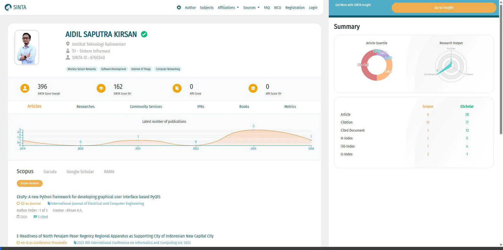
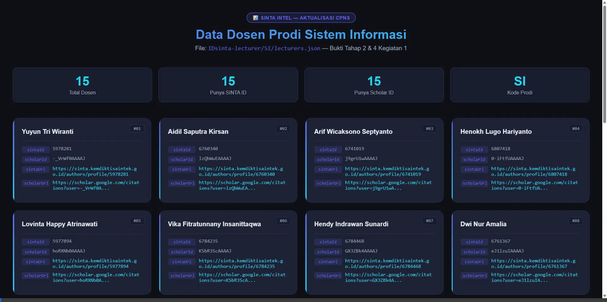

Koordinasi dengan Ketua Program Studi
Selesai📌 Deskripsi Kegiatan
Melakukan diskusi dan koordinasi dengan Ketua Program Studi Sistem Informasi mengenai rencana pembuatan sistem SITRIA, khususnya terkait pengumpulan data SINTA ID dan Google Scholar ID seluruh dosen prodi.
✅ Output / Bukti Fisik
Notulensi / Catatan koordinasi KaprodiDokumentasi Foto


Pengumpulan Data SINTA ID & Scholar ID Dosen
Selesai📌 Deskripsi Kegiatan
Mengumpulkan data identitas akademik seluruh dosen Prodi SI, meliputi nama lengkap, SINTA ID, Google Scholar ID, beserta URL profil masing-masing dari portal resmi SINTA Kemdiktisaintek.
✅ Output / Bukti Fisik
Filelecturers.json prodi SI (15 dosen)
Dokumentasi Foto


Lihat juga: Video 2 di bawah — tampilan file JSON di viewer
Verifikasi Data di Portal SINTA & Google Scholar
Selesai📌 Deskripsi Kegiatan
Melakukan verifikasi silang data tiap dosen dengan membuka langsung profil SINTA di sinta.kemdiktisaintek.go.id dan profil Google Scholar untuk memastikan SINTA ID dan Scholar ID yang dikumpulkan valid dan akurat.
✅ Output / Bukti Fisik
Data SINTA ID & Scholar ID terverifikasi validDokumentasi Foto


Lihat juga: Video 1 di bawah — screen recording verifikasi SINTA & Scholar
Penyusunan File lecturers.json
Selesai
📌 Deskripsi Kegiatan
Menyusun dan menyimpan seluruh data dosen yang telah diverifikasi ke dalam format JSON terstruktur (lecturers.json) per program studi. File ini menjadi sumber data utama sistem SITRIA — memuat nama, SINTA ID, Scholar ID, dan URL profil tiap dosen.
✅ Output / Bukti Fisik
FileIDsinta-lecturer/SI/lecturers.json tersusun lengkap
Dokumentasi Foto


Validasi Data oleh Ketua Program Studi
Selesai📌 Deskripsi Kegiatan
Menyampaikan hasil pengumpulan dan verifikasi data kepada Ketua Program Studi untuk mendapatkan persetujuan dan validasi bahwa data dosen yang terkumpul sudah lengkap, akurat, dan siap digunakan dalam sistem SITRIA.
✅ Output / Bukti Fisik
Screenshot WA approval / Lembar tanda tangan KaprodiDokumentasi Foto


Video 1 — Verifikasi SINTA & Google Scholar
Bukti Tahap 3 · ~4 menit
Proses membuka profil SINTA 3 dosen (Aidil, Yuyun, Arif) dan Google Scholar 2 dosen, membuktikan SINTA ID valid di URL dan halaman profil masing-masing.
Buka VideoVideo 2 — Tampilan JSON & Cross-check
Bukti Tahap 2 & 4 · ~3 menit
Tampilan viewer yang memperlihatkan 15 dosen Prodi SI beserta sintaId, scholarId dan URL-nya. Diakhiri cross-check ke profil SINTA untuk membuktikan data valid.
Buka Video📝 Simpulan Kegiatan 1
Kegiatan 1 berhasil diselesaikan dalam dua minggu pertama habituasi (M1–M2, 7–20 Maret 2026).
Seluruh data SINTA ID dan Google Scholar ID dari 15 dosen Prodi Sistem Informasi telah berhasil dikumpulkan, diverifikasi langsung melalui portal SINTA Kemdiktisaintek dan Google Scholar,
serta disusun ke dalam file lecturers.json yang terstruktur.
Data ini menjadi fondasi utama sistem SITRIA dalam mengambil dan memperbarui data publikasi dosen secara otomatis.
Kegiatan ini mencerminkan nilai Akuntabel (data valid & dapat diverifikasi), Kompeten (menggunakan sumber resmi), dan Kolaboratif (melibatkan Kaprodi dalam validasi akhir).